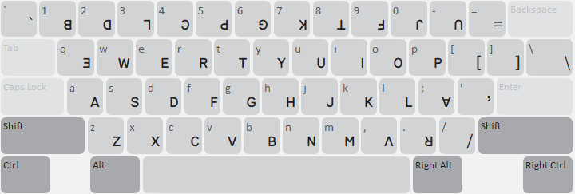
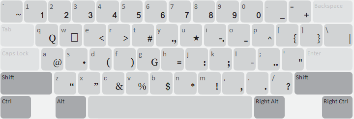

This keyboard uses the standard Lisu keyboard layout.
The word-forming modifier letter U+02CD is on the SHIFT+O key.
U+2010 HYPHEN is on the SHIFT+L key. It is preferred to U+002D HYPHEN-MINUS for the dash used to separate syllables in names, as its semantics are less ambiguous than U+002D.

